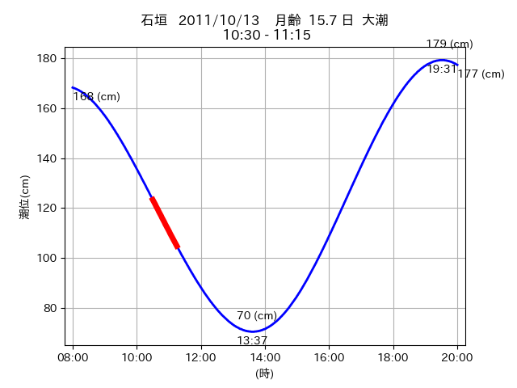
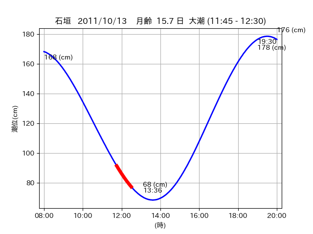
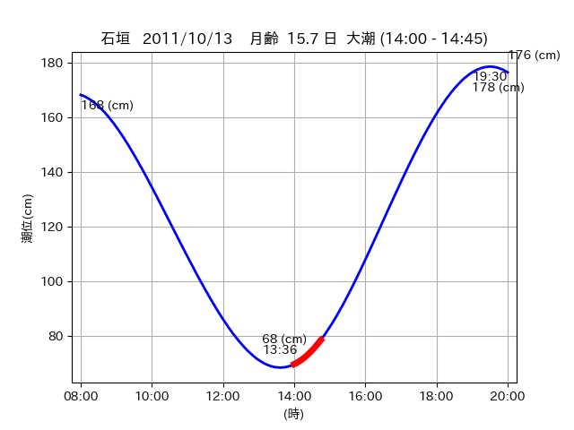

<!DOCTYPE html>
<html>
<head>
    
    <meta http-equiv="content-type" content="text/html; charset=UTF-8" />
    
        <script>
            L_NO_TOUCH = false;
            L_DISABLE_3D = false;
        </script>
    
    <style>html, body {width: 100%;height: 100%;margin: 0;padding: 0;}</style>
    <style>#map {position:absolute;top:0;bottom:0;right:0;left:0;}</style>
    <script src="https://cdn.jsdelivr.net/npm/leaflet@1.9.3/dist/leaflet.js"></script>
    <script src="https://code.jquery.com/jquery-3.7.1.min.js"></script>
    <script src="https://cdn.jsdelivr.net/npm/bootstrap@5.2.2/dist/js/bootstrap.bundle.min.js"></script>
    <script src="https://cdnjs.cloudflare.com/ajax/libs/Leaflet.awesome-markers/2.0.2/leaflet.awesome-markers.js"></script>
    <link rel="stylesheet" href="https://cdn.jsdelivr.net/npm/leaflet@1.9.3/dist/leaflet.css"/>
    <link rel="stylesheet" href="https://cdn.jsdelivr.net/npm/bootstrap@5.2.2/dist/css/bootstrap.min.css"/>
    <link rel="stylesheet" href="https://netdna.bootstrapcdn.com/bootstrap/3.0.0/css/bootstrap-glyphicons.css"/>
    <link rel="stylesheet" href="https://cdn.jsdelivr.net/npm/@fortawesome/fontawesome-free@6.2.0/css/all.min.css"/>
    <link rel="stylesheet" href="https://cdnjs.cloudflare.com/ajax/libs/Leaflet.awesome-markers/2.0.2/leaflet.awesome-markers.css"/>
    <link rel="stylesheet" href="https://cdn.jsdelivr.net/gh/python-visualization/folium/folium/templates/leaflet.awesome.rotate.min.css"/>
    
            <meta name="viewport" content="width=device-width,
                initial-scale=1.0, maximum-scale=1.0, user-scalable=no" />
            <style>
                #map_d9a84963c99b1c2e2e894cbfff01f543 {
                    position: relative;
                    width: 2048.0px;
                    height: 1600.0px;
                    left: 0.0%;
                    top: 0.0%;
                }
                .leaflet-container { font-size: 1rem; }
            </style>
        
</head>
<body>
    
    
            <div class="folium-map" id="map_d9a84963c99b1c2e2e894cbfff01f543" ></div>
        
</body>
<script>
    
    
            var map_d9a84963c99b1c2e2e894cbfff01f543 = L.map(
                "map_d9a84963c99b1c2e2e894cbfff01f543",
                {
                    center: [24.267, 124.156],
                    crs: L.CRS.EPSG3857,
                    ...{
  "zoom": 12,
  "zoomControl": true,
  "preferCanvas": false,
}

                }
            );

            

        
    
            var tile_layer_9b592bbcc71d2c5a042b217f94ce84f9 = L.tileLayer(
                "https://cyberjapandata.gsi.go.jp/xyz/seamlessphoto/{z}/{x}/{y}.jpg",
                {
  "minZoom": 0,
  "maxZoom": 18,
  "maxNativeZoom": 18,
  "noWrap": false,
  "attribution": "\u5730\u7406\u9662\u5730\u56f3",
  "subdomains": "abc",
  "detectRetina": false,
  "tms": false,
  "opacity": 1,
}

            );
        
    
            tile_layer_9b592bbcc71d2c5a042b217f94ce84f9.addTo(map_d9a84963c99b1c2e2e894cbfff01f543);
        
    
            var marker_cb10a9837ad974b7b19998f387fc1fa7 = L.marker(
                [24.2463, 124.1101],
                {
}
            ).addTo(map_d9a84963c99b1c2e2e894cbfff01f543);
        
    
            var icon_7412b0a9d79e3afbc0aa5ff479adf686 = L.AwesomeMarkers.icon(
                {
  "markerColor": "orange",
  "iconColor": "white",
  "icon": "info-sign",
  "prefix": "glyphicon",
  "extraClasses": "fa-rotate-0",
}
            );
        
    
        var popup_63f8291c0ba2ef636e0c248b0ea8f06d = L.popup({
  "maxWidth": "100%",
});

        
            
                var html_71d5f8cc4cdd5c7abc0f48d3f34beb52 = $(`<div id="html_71d5f8cc4cdd5c7abc0f48d3f34beb52" style="width: 100.0%; height: 100.0%;"><table><tr><td></td></tr><tr><td><center>20111013 No.1 </center></table></td></tr></table</div>`)[0];
                popup_63f8291c0ba2ef636e0c248b0ea8f06d.setContent(html_71d5f8cc4cdd5c7abc0f48d3f34beb52);
            
        

        marker_cb10a9837ad974b7b19998f387fc1fa7.bindPopup(popup_63f8291c0ba2ef636e0c248b0ea8f06d)
        ;

        
    
    
                marker_cb10a9837ad974b7b19998f387fc1fa7.setIcon(icon_7412b0a9d79e3afbc0aa5ff479adf686);
            
    
            var poly_line_ae55647f433254a6de8b9c22efd60fad = L.polyline(
                [[24.2463, 124.1101], [24.2479, 124.1195]],
                {"bubblingMouseEvents": true, "color": "#FF00FF", "dashArray": null, "dashOffset": null, "fill": false, "fillColor": "#FF00FF", "fillOpacity": 0.2, "fillRule": "evenodd", "lineCap": "round", "lineJoin": "round", "noClip": false, "opacity": 1.0, "smoothFactor": 1.0, "stroke": true, "weight": 3}
            ).addTo(map_d9a84963c99b1c2e2e894cbfff01f543);
        
    
            var marker_4a40665e4d7f7b99992d06d38ebb5f27 = L.marker(
                [24.2485, 124.0957],
                {
}
            ).addTo(map_d9a84963c99b1c2e2e894cbfff01f543);
        
    
            var icon_e0b394740644b75f44f9e68accf7272b = L.AwesomeMarkers.icon(
                {
  "markerColor": "orange",
  "iconColor": "white",
  "icon": "info-sign",
  "prefix": "glyphicon",
  "extraClasses": "fa-rotate-0",
}
            );
        
    
        var popup_f21e82dd6679600ea40e1c825bededba = L.popup({
  "maxWidth": "100%",
});

        
            
                var html_51f3daeecd6c7672b31e447b245020b6 = $(`<div id="html_51f3daeecd6c7672b31e447b245020b6" style="width: 100.0%; height: 100.0%;"><table><tr><td></td></tr><tr><td><center>20111013 No.2 </center></table></td></tr></table</div>`)[0];
                popup_f21e82dd6679600ea40e1c825bededba.setContent(html_51f3daeecd6c7672b31e447b245020b6);
            
        

        marker_4a40665e4d7f7b99992d06d38ebb5f27.bindPopup(popup_f21e82dd6679600ea40e1c825bededba)
        ;

        
    
    
                marker_4a40665e4d7f7b99992d06d38ebb5f27.setIcon(icon_e0b394740644b75f44f9e68accf7272b);
            
    
            var poly_line_c0a6639a311be79b17f50ae2a348f83f = L.polyline(
                [[24.2485, 124.0957], [24.2461, 124.1051]],
                {"bubblingMouseEvents": true, "color": "#00FFFF", "dashArray": null, "dashOffset": null, "fill": false, "fillColor": "#00FFFF", "fillOpacity": 0.2, "fillRule": "evenodd", "lineCap": "round", "lineJoin": "round", "noClip": false, "opacity": 1.0, "smoothFactor": 1.0, "stroke": true, "weight": 3}
            ).addTo(map_d9a84963c99b1c2e2e894cbfff01f543);
        
    
            var marker_e24ecc8e3fdb7e291cf9f08dfb33e545 = L.marker(
                [24.2647, 124.1541],
                {
}
            ).addTo(map_d9a84963c99b1c2e2e894cbfff01f543);
        
    
            var icon_43d969fe473963289dc9b4832a0720b5 = L.AwesomeMarkers.icon(
                {
  "markerColor": "orange",
  "iconColor": "white",
  "icon": "info-sign",
  "prefix": "glyphicon",
  "extraClasses": "fa-rotate-0",
}
            );
        
    
        var popup_a830ee80b1062d5c34c85a4280aa5ad2 = L.popup({
  "maxWidth": "100%",
});

        
            
                var html_a6c63764fb3daef60a6a40380915df88 = $(`<div id="html_a6c63764fb3daef60a6a40380915df88" style="width: 100.0%; height: 100.0%;"><table><tr><td></td></tr><tr><td><center>20111013 No.3 </center></table></td></tr></table</div>`)[0];
                popup_a830ee80b1062d5c34c85a4280aa5ad2.setContent(html_a6c63764fb3daef60a6a40380915df88);
            
        

        marker_e24ecc8e3fdb7e291cf9f08dfb33e545.bindPopup(popup_a830ee80b1062d5c34c85a4280aa5ad2)
        ;

        
    
    
                marker_e24ecc8e3fdb7e291cf9f08dfb33e545.setIcon(icon_43d969fe473963289dc9b4832a0720b5);
            
    
            var poly_line_d3a989db0d11b7b699808185206a43a8 = L.polyline(
                [[24.2647, 124.1541], [24.2695, 124.1577]],
                {"bubblingMouseEvents": true, "color": "#FF00FF", "dashArray": null, "dashOffset": null, "fill": false, "fillColor": "#FF00FF", "fillOpacity": 0.2, "fillRule": "evenodd", "lineCap": "round", "lineJoin": "round", "noClip": false, "opacity": 1.0, "smoothFactor": 1.0, "stroke": true, "weight": 3}
            ).addTo(map_d9a84963c99b1c2e2e894cbfff01f543);
        
</script>
</html>